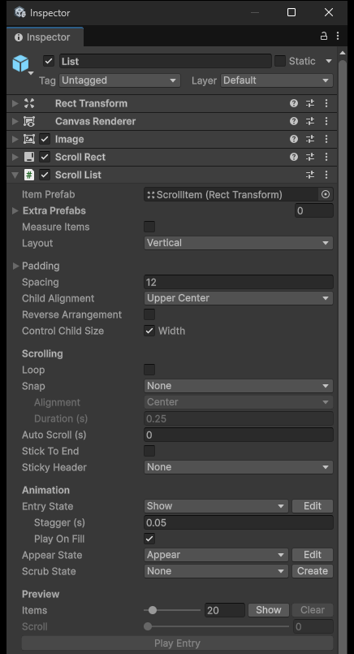
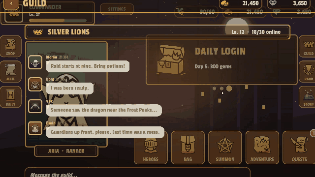
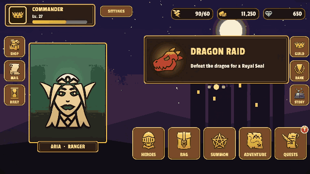

스크롤 리스트
KeyTweenScrollList는 랭킹, 퀘스트 목록, 채팅, 캐러셀, 배너처럼 많은 항목을 스크롤해서 보여 주는 UI를 만드는 컴포넌트입니다.
ScrollRect에 붙여 쓰는 가상화 리스트로, 화면에 보이는 아이템만 오브젝트로 만들고 스크롤할 때 그 오브젝트를 재사용합니다. 그래서 항목이 수백 개여도 오브젝트 수는 화면에 보이는 만큼만 유지됩니다.
스크롤 형태마다 컴포넌트가 따로 있지 않습니다. 세로 리스트, 그리드, 캐러셀, 휠 피커 같은 형태는 모두 이 리스트의 설정을 조합해서 만듭니다.
연출은 전부 아이템(또는 페이지 점, 섹션 헤더)에 붙은 KeyTween 상태로 만듭니다. 상태는 KeyTween 컴포넌트에 이름을 붙여 저장해 둔 애니메이션 하나를 말합니다.
추가하려면 ScrollRect가 있는 오브젝트에서 Add Component > KeyTween > Scroll List를 선택합니다.
1. 아이템과 배치
아이템 Prefab과 배치 방식을 정하는 방법을 설명합니다. 리스트의 인스펙터는 Unity의 Layout Group과 같은 방식으로 구성되어 있습니다.
아이템 Prefab 지정하기
| 항목 | 내용 |
|---|---|
| Item Prefab | 기본 아이템 Prefab(0번). 이 Prefab의 크기가 기본 아이템 크기입니다. |
| Extra Prefabs | 아이템 종류가 여러 가지일 때 추가하는 Prefab(1번부터) |
| Measure Items | 아이템 크기를 레이아웃의 선호 크기(preferred size)로 잽니다. |
| Layout | Vertical, Horizontal, Grid, Masonry 중 하나 |
- Extra Prefabs 중 어떤 종류를 쓸지는 코드의
prefabOf(index)로 고릅니다. 종류마다 따로 재사용합니다. - Measure Items는 글이 길면 커지는 말풍선에 씁니다.

Layout 고르기
Layout마다 쓸 수 있는 설정은 다음과 같습니다.
| Layout | 설정 |
|---|---|
| Vertical / Horizontal | Padding, Spacing, Child Alignment, Reverse Arrangement, Control Child Size |
| Grid | Padding, Cell Size, Spacing, Child Alignment, Constraint, Constraint Count |
| Masonry | Grid와 같지만 Cell Size 대신 Column Size(열 폭) |
- Control Child Size는 Width 또는 Height를 골라 아이템을 스크롤 방향과 직각으로 늘립니다.
- Grid의 Constraint는 Flexible, Fixed Column Count, Fixed Row Count 중 하나입니다.
- Masonry는 아이템을 가장 짧은 열에 쌓습니다.
스크롤 방향과 아이템 크기
- 스크롤 방향은 Layout으로 정해집니다. Grid에서 Fixed Row Count를 고르면 가로로 스크롤합니다.
- 스크롤 방향의 아이템 크기는 다음 순서로 정해집니다. Grid는 항상 Cell Size를 씁니다.
sizeOf(index)콜백- Measure Items
- Prefab 크기
- 내용이 뷰포트보다 짧으면 Child Alignment가 스크롤 방향에도 적용됩니다. 예를 들어 채팅은 Lower로 정렬해서 아래부터 쌓습니다.
배치 비용
아이템 위치는 레이아웃이 바뀔 때 한 번만 계산하며, LayoutGroup은 쓰지 않습니다. 따라서 스크롤하지 않는 동안에는 비용이 들지 않습니다.
2. 데이터 연결
리스트에 데이터를 연결하는 방법을 설명합니다. 데이터는 UI Toolkit의 ListView처럼 콜백으로 연결합니다.
콜백으로 바인딩하기
아이템 Prefab이 특정 클래스를 상속할 필요는 없습니다. 아래 코드의 ItemView는 Prefab에 붙어 있는 아무 컴포넌트를 뜻합니다.
list.SetCount(100, (ItemView view, int index) => view.Set(items[index]),
(ItemView view, int index) => view.Clear()); // unbind는 선택
list.SetData(items, (ItemView view, Item item, int index) => view.Set(item));
- 바인딩 콜백은 아이템이 화면에 보이게 될 때만 호출됩니다.
- 바인딩 콜백과 함께
SetCount나SetData를 부르면 리스트를 처음부터 다시 채웁니다. - 다시 채우면 스크롤 위치는 시작으로 돌아갑니다. Stick To End가 켜져 있으면 끝으로 갑니다.
- Play On Fill이 켜져 있으면 진입 연출도 재생합니다.
여러 종류의 Prefab 쓰기
Prefab이 여러 종류이면 RectTransform으로 받고, prefabOf로 인덱스마다 종류를 고릅니다.
list.prefabOf = i => items[i].isHeader ? 1 : 0; // SetCount보다 먼저 지정
list.SetCount(48, (RectTransform item, int index) => ...); // Prefab이 여러 종류일 때
개수만 바꾸고 다시 바인딩하기
바인딩 콜백 없이 개수만 바꾸면 스크롤 위치가 유지됩니다. 남은 아이템은 오브젝트를 그대로 둔 채 다시 바인딩하고, Appear는 다시 재생하지 않습니다.
list.SetCount(10); // 개수만 변경: 스크롤 위치 유지, 남은 아이템은 다시 바인딩만, 새로 보이는 아이템만 Appear
list.Refresh(); // 보이는 아이템을 전부 다시 바인딩 (Measure Items면 크기도 다시 잼)
list.RefreshItem(5);
- 개수만 바꾸는
SetCount(count, stickDuration = 0.25f)는 새로 생긴 아이템의 크기만 잽니다. - Stick To End가 켜져 있고 사용자가 끝을 보고 있었다면,
stickDuration초 동안 새 끝으로 미끄러지듯 이동합니다.
예: 길드 채팅
RPG 샘플의 길드 채팅은 메시지가 올 때마다 개수만 늘립니다.
- 말풍선은 글 길이에 맞춰 크기가 정해집니다(Measure Items).
- 리스트는 가장 최근 메시지를 계속 보여 줍니다(Stick To End).

3. 위치와 이동
리스트의 현재 상태를 읽고, 특정 아이템으로 이동하고, 스크롤 방식을 정하는 방법을 설명합니다.
상태 읽기
| API | 내용 |
|---|---|
Count |
아이템 개수 |
VisibleRange |
보이는 범위 |
Offset |
시작부터 스크롤한 픽셀 수 |
AtEnd |
끝에 있는지 여부 |
ItemSize |
기본 아이템 크기 |
GetItem(index), GetItem<TView>(index) |
보이는 중이면 그 오브젝트, 아니면 null |
IndexAt(screenPoint, camera) |
화면 좌표(포인터 위치) 아래 아이템의 번호. 없으면 −1 |
ItemPosition(index), SizeOf(index) |
아이템의 위치와 크기 |
NearestIndex(alignment) |
기준점에 가장 가까운 아이템 |
CurrentIndex, CurrentIndexChanged |
Snap Alignment 자리에 있는 아이템 |
ItemShown |
아이템이 보이게 될 때(바인딩 뒤) 발생 |
ItemHidden |
아이템이 사라질 때(바인딩 해제 전) 발생 |
CurrentIndex는 페이지 번호나 캐러셀, 휠 피커의 선택 항목을 알 때 씁니다.
아이템으로 이동하기
ScrollTo(index, alignment = Start, duration = 0)는 그 아이템을 뷰포트의 시작, 가운데, 끝 중 한 곳에 맞춥니다.
- 이동은 OutCubic으로 합니다.
- duration이 0이면 바로 이동합니다.
- Loop가 켜져 있으면 가까운 쪽으로 돌아갑니다.
아이템 접고 지우기
ResizeItem(index, size, duration)은 아이템 하나의 크기를 애니메이션으로 바꾸고, 뒤의 아이템들이 따라 움직입니다(아코디언). RemoveItem(index)는 데이터에서 항목 하나를 지운 뒤 호출합니다.
await list.ResizeItem(index, 0f, foldSeconds); // 접기. 애니메이션이 끝나면 완료되는 Awaitable
items.RemoveAt(index); // 데이터에서 지운 뒤
list.RemoveItem(index); // 그 아이템만 사라짐
RemoveItem을 부르면 아래 아이템들이 한 칸씩 올라옵니다.- 올라오는 아이템은 오브젝트와 연출 상태를 그대로 유지합니다.
- 다시 바인딩하거나 등장 연출을 재생하지 않습니다.
다시 재생하고 다시 배치하기
PlayEntry(): 진입 연출을 다시 재생합니다.Rebuild(): 배치를 다시 계산합니다.
Scrolling 설정
| 설정 | 내용 |
|---|---|
| Loop | 마지막 아이템 다음에 첫 아이템이 이어집니다. |
| Snap: None | 맞추지 않습니다. |
| Snap: Nearest | 손을 떼면 가장 가까운 아이템에 맞춥니다. |
| Snap: One Per Swipe | 드래그 한 번에 정확히 한 칸씩 움직입니다. |
| Snap Alignment / Duration | 맞출 위치 / 맞추는 데 걸리는 시간 |
| Auto Scroll (s) | 지정한 초마다 다음 아이템으로 넘어갑니다(배너). |
| Stick To End | 끝을 보고 있을 때 아이템이 늘어나면 계속 끝을 보여 줍니다(채팅). |
| Sticky Header | 지정한 Prefab 종류를 섹션 헤더로 씁니다. |
- Loop와 Sticky Header는 Vertical과 Horizontal에서만 쓸 수 있습니다.
- One Per Swipe에서 30px 미만으로 끌면 제자리로 돌아옵니다.
- Auto Scroll은 드래그하는 동안 멈춥니다.
- Sticky Header에서 지나간 헤더는 위쪽에 고정되고, 다음 헤더가 오면 그 헤더를 밀어 올립니다.
중첩 스크롤
리스트의 스크롤 축과 다른 방향으로 드래그하면 그 입력을 바깥의 ScrollRect로 넘깁니다.
- 페이지 안에 들어 있는 세로 리스트
- 세로 리스트 안의 가로 줄
예: 퀘스트 목록
RPG 샘플의 퀘스트 목록은 섹션 헤더를 Sticky Header로 고정합니다.
- 섹션 헤더: DAILY, WEEKLY, ACHIEVEMENTS
- 보상을 받은 줄은
ResizeItem으로 접은 뒤RemoveItem으로 지웁니다.

4. 아이템 애니메이션
아이템이 들어오고 스크롤될 때의 연출을 설명합니다. 연출에 쓸 상태는 아이템 Prefab의 KeyTween에서 고릅니다.
상태 편집하기
상태 줄의 버튼으로 바로 편집할 수 있습니다.
- Edit: 그 상태를 KeyTween Editor로 엽니다.
- Create:
KeyTween이나 상태가 없으면 새로 만든 뒤 엽니다.
Prefab 에셋이면 먼저 Prefab 모드로 엽니다.
진입 연출 — Entry State
Entry State, Stagger, Play On Fill을 함께 씁니다. 처음 채울 때(또는 PlayEntry()를 부를 때) 보이는 아이템들이 Stagger 간격을 두고 차례로 재생합니다.
- 아직 차례를 기다리는 아이템은 상태의 시작 모습으로 있습니다.
- 진입 연출이 끝난 뒤 들어오는 아이템은 끝 모습으로 나타납니다.
등장 연출 — Appear State
스크롤해서 새로 보이게 된 아이템에 재생합니다. 다음 경우에는 재생하지 않습니다.
- 처음 채울 때
- 다른 아이템의 크기 변경이나 삭제 때문에 화면에 들어온 아이템
재사용되는 오브젝트에는 이전 인덱스의 모습이 남아 있을 수 있습니다. 그래서 아이템이 보이게 될 때 먼저 진입 상태의 끝 모습으로 맞춘 뒤 등장 상태를 재생합니다.
위치에 따른 연출 — Scrub State
아이템이 뷰포트 안에서 어디에 있는지를 상태의 시간으로 써서 그 시점의 모습을 적용합니다(Stop(state, time)).
- 0 = 시작 가장자리
- 0.5 = 가운데
- 1 = 끝
이 값은 상태 길이에 대한 비율입니다. 그래서 키는 0초, 상태 길이의 절반, 상태 길이에 둡니다. 예를 들어 길이 1초인 상태에서 가운데에서 커지는 캐러셀은 Scale 키를 0초 = 0.8, 0.5초 = 1.1, 1초 = 0.8로 둡니다.
캐러셀의 가운데 확대, 휠 피커의 기울기, 페이지 패럴랙스에 씁니다.
콜백
- Entry와 Appear는 재생이므로 그 상태의 On Start, On Complete가 불립니다. 재생 중에 아이템이 화면 밖으로 나가 오브젝트가 재사용되면 On Cancel이 불립니다.
- Scrub은 재생하지 않고 모습만 맞추므로 콜백을 부르지 않습니다.
예: 랭킹 목록
- 페이지가 열릴 때 줄이 차례로 들어옵니다.
- 스크롤하면 새로 보이는 줄에 등장 연출이 재생됩니다.
- MY RANK 버튼은
ScrollTo로 내 순위로 이동합니다.

5. 에디터 미리보기
인스펙터의 Preview를 쓰면 Play 모드에 들어가지 않고도 리스트를 확인할 수 있습니다.
Preview 사용하기
편집 모드에서 Item Prefab이 지정되어 있을 때 사용할 수 있습니다.
- Show / Update: Items에 지정한 개수(1~200)만큼 아이템을 배치합니다.
- Scroll 슬라이더: 스크롤 위치를 바꿔 봅니다. Scrub 상태도 함께 반영됩니다.
- Play Entry: 진입 연출을 재생합니다.
- Clear: 임시 오브젝트를 지웁니다.
배치된 아이템은 저장되지 않는 임시 오브젝트입니다.
6. 도우미 컴포넌트
리스트와 함께 쓰는 컴포넌트 세 가지를 설명합니다. 이 컴포넌트들도 연출은 KeyTween 상태로 만들고, 상태 칸의 Edit / Create 버튼으로 바로 KeyTween Editor를 열 수 있습니다.
| 컴포넌트 | 쓰임 | 상태 |
|---|---|---|
KeyTweenPageIndicator |
페이지 점, 배너 점, 탭 바 | On / Off |
KeyTweenScrollScrub |
스크롤하면 접히는 헤더 | 아무 상태 1개 |
KeyTweenPullToRefresh |
당겨서 새로고침 | Pull / Refreshing |
페이지 점과 탭 바 — KeyTweenPageIndicator
- 리스트의 아이템 개수만큼 표시용 Prefab을 만듭니다.
- 배치는 이 오브젝트의 Layout Group이 맡습니다.
- 표시 아이템의 Button을 누르면 리스트가 그 아이템으로 이동합니다.
- 탭 글자는
labels로 지정합니다.
접히는 헤더 — KeyTweenScrollScrub
스크롤한 거리(0 ~ Distance px)를 상태의 시간으로 씁니다. 0px이면 상태의 시작, Distance만큼 스크롤하면 상태의 끝 모습입니다. 리스트가 스크롤되면서 헤더가 접히거나 툴바가 나타나는 연출에 씁니다.
- 아무 오브젝트에나 Add Component > KeyTween > Scroll Scrub을 붙입니다.
- List에 리스트를, Target에 헤더의
KeyTween을, State에 접히는 상태 이름을 넣습니다. - Distance에 다 접힐 때까지의 스크롤 거리(px)를 넣습니다.
당겨서 새로고침 — KeyTweenPullToRefresh
리스트와 같은 오브젝트에 붙입니다. 세로 리스트에서만 쓸 수 있습니다.
- 시작 위치보다 더 당기면, 당긴 거리에 따라 Pull 상태를 적용합니다.
- Distance를 넘겨 당긴 뒤 놓으면
onRefresh를 호출합니다. - 새로고침하는 동안 Refreshing 상태를 반복 재생하고 위쪽을 열어 둡니다(
Refreshing= true). EndRefresh()를 부르면 닫힙니다.
pull.onRefresh.AddListener(async () =>
{
var items = await LoadItemsAsync();
list.SetData(items, (ItemView view, Item item, int index) => view.Bind(item));
pull.EndRefresh();
});
7. 만들 수 있는 형태
리스트 설정과 상태로 만들 수 있는 형태를 정리합니다.
예시 씬 열기
UI Components 샘플(Package Manager > KeyTween > Samples)의 Scenes/Scroll.unity에 18가지 예시가 들어 있습니다.
형태별 설정
| 형태 | 설정 / 상태 |
|---|---|
| 세로 리스트, 가로 리스트, 그리드, 가로 그리드 | Layout, Entry Show + Appear Appear |
| 캐러셀 | Scrub Focus(가운데 아이템 확대), Snap Nearest Center |
| 페이징 | One Per Swipe, Scrub Parallax, Page Indicator |
| 무한 루프 | Loop + Scrub + Snap |
| 자동 배너 | Loop + One Per Swipe + Auto Scroll + Page Indicator |
| 휠 피커 | Scrub Wheel(Rotation X, 투명도, 크기), Snap Nearest Center |
| 섹션 헤더 | Prefab 2종, Sticky Header |
| 가변 크기, 채팅 | Measure Items (+ Stick To End, Lower 정렬) |
| 아코디언 | Open/Close 상태 + ResizeItem |
| 메이슨리 | Masonry |
| 중첩 스크롤 | 세로 리스트의 줄마다 가로 리스트 |
| 탭 | Page Indicator(On/Off 밑줄) + One Per Swipe |
| 접히는 헤더 | Scroll Scrub |
| 당겨서 새로고침 | Pull To Refresh |